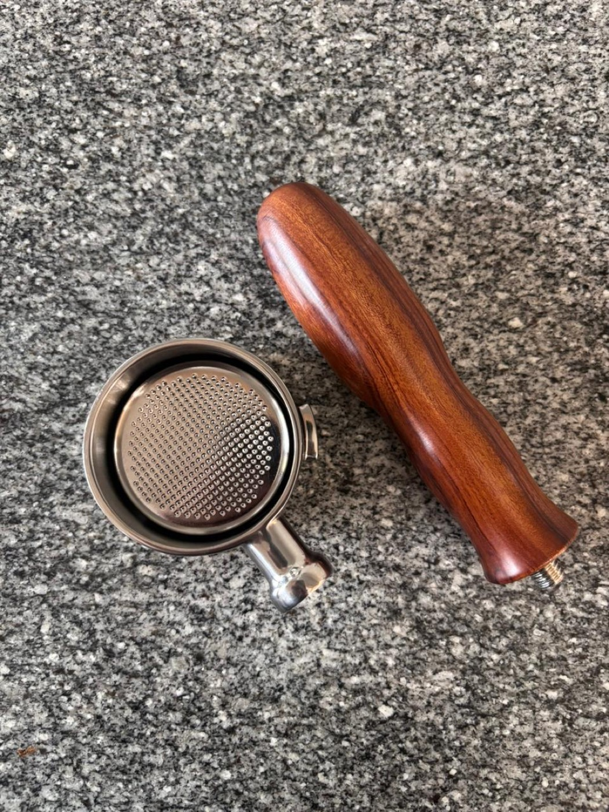
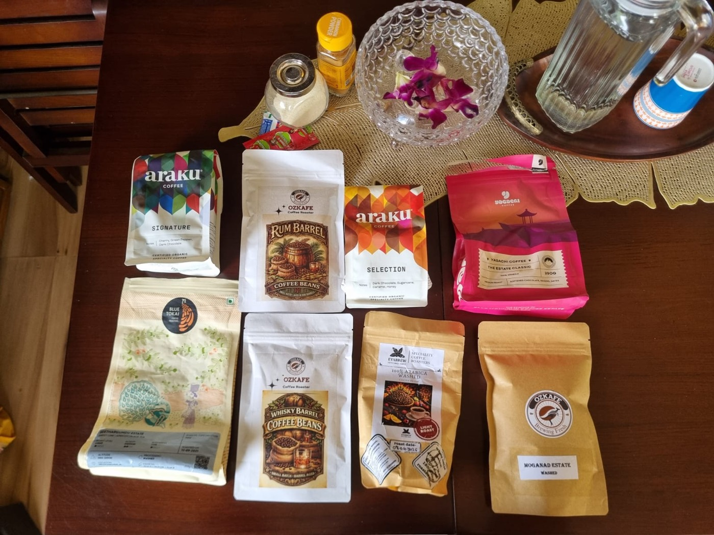
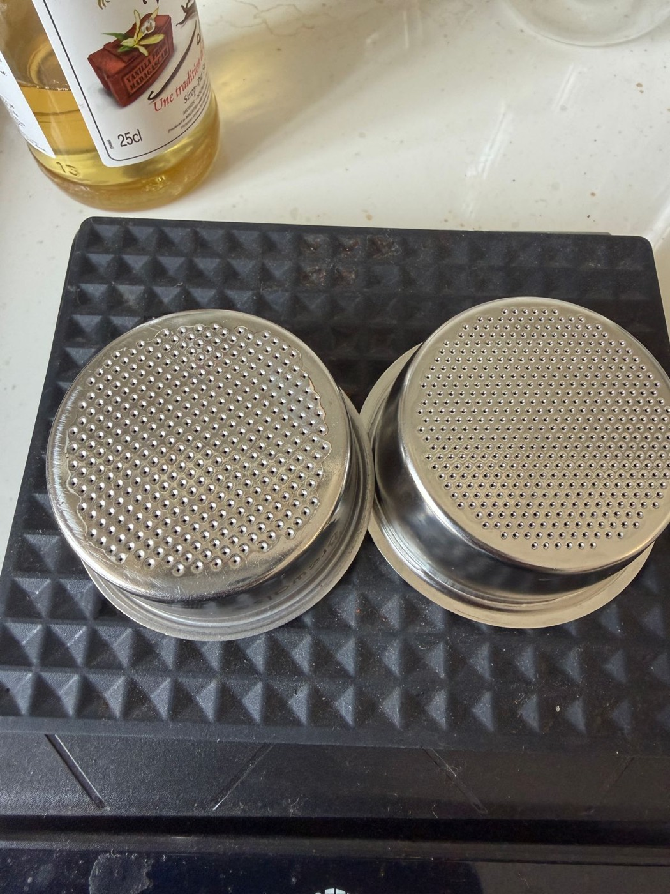
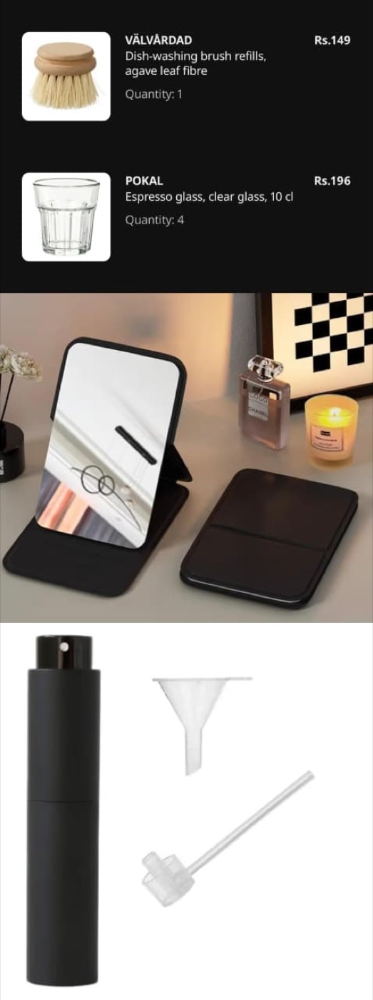
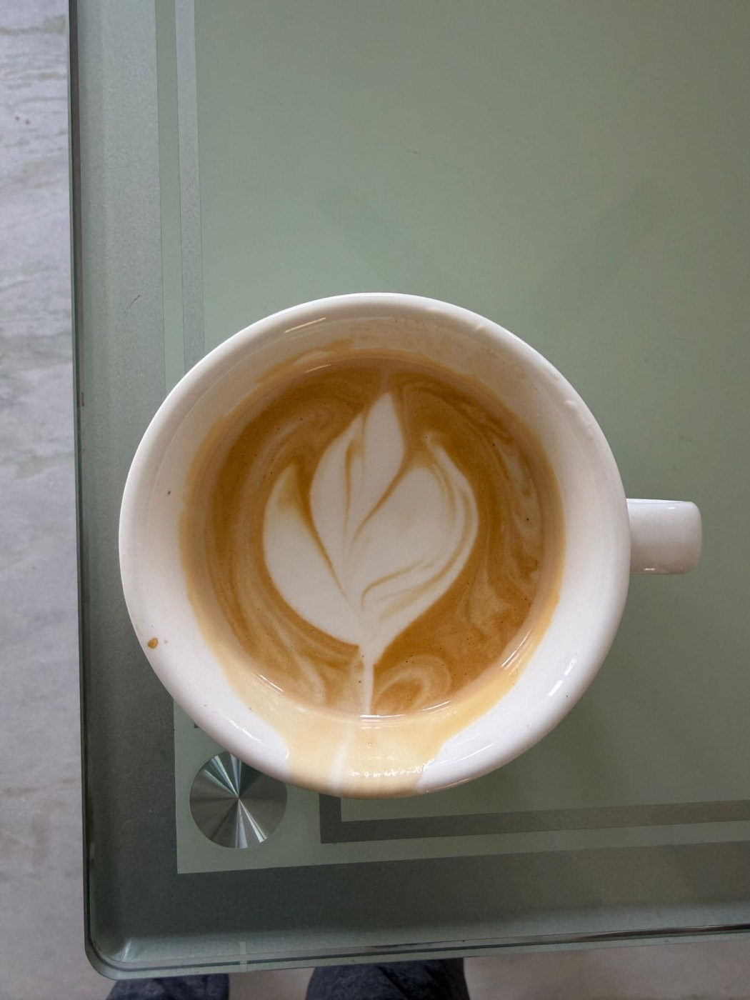

#1
Fresh beans
The single biggest lever. Stale supermarket beans = sad espresso no matter what. Buy freshly roasted, rest 7–10 days off roast date, use within a month.
See bean picks →Practical espresso guidance · India
You have an espresso machine. The next decisions that matter are the grinder, coffee, basket and basic preparation equipment. This guide covers the essentials for building and using an espresso setup in India, with practical guidance drawn from the 9 Bar Social community.

Use this checklist to track the equipment you have purchased. Progress is saved locally on this device.
Prioritise these three components. In most setups, the grinder deserves at least as much attention as the espresso machine.
The single biggest lever. Stale supermarket beans = sad espresso no matter what. Buy freshly roasted, rest 7–10 days off roast date, use within a month.
See bean picks →The grinder has a major effect on extraction quality. A capable grinder gives you consistent particle size and makes dialing in substantially easier.
Find your grinder →The main upgrade is moving from a pressurised basket to a non-pressurised basket. A precision IMS basket is a useful option, and a bottomless portafilter makes channeling easier to identify. A purpose-built bottomless portafilter is simpler than modifying the stock portafilter.
Baskets & portafilters →Keep the stock pressurised basket or portafilter if you use pre-ground coffee or want a more forgiving workflow.
Espresso requires a fine, consistent, espresso-capable grind. A grinder designed only for filter coffee may make dialing in difficult. Filter the options by budget and type.
Medium / medium-dark roasts are the most forgiving place to start. Want to run lighter roasts? Use the high-temp flush trick below to pull a hotter, sweeter shot. Filter by vibe:
The community maintains a crowd-sourced spreadsheet of Indian coffee beans ↗ with roasters, prices and approximate ₹/gram figures.

For compatible accessories, 51mm is a common basket and portafilter size. Always check the product listing and specifications before ordering.

The basket matters more than the portafilter body. A precision basket (IMS-grade) gives more even extraction. But honestly: a decent grinder + fresh beans + a good-enough basket beats a fancy basket with bad grind.
Never put a pressurised basket in a bottomless portafilter — you get foam, not crema, spraying everywhere.
Some accessories are essential for consistency; others are optional improvements to workflow and convenience.

Stop trusting the buttons (the "2x" button pulls a lungo). Get a scale, weigh everything, change one variable at a time.
| Dose in | Shot out | Time | Ratio | |
|---|---|---|---|---|
| Double | 18 g | 36 g | 25–32 s | 1:2 |
| Single | 9 g | ~22 g | 25–30 s | 1:2.5 |
| Light roast | 18 g | 45–54 g | longer | 1:2.5–1:3 |
Timer starts the moment you press the button (coffee-water contact), not at first drip.
Select a symptom to review common causes and practical adjustments.
Select a symptom to review common causes and practical adjustments.
Steam power varies between machines. Technique, milk temperature and wand positioning have a greater effect on the result than power alone.

Common machine issues and practical checks before service or repair.
Common questions about equipment, extraction, coffee and daily use.
These channels cover the fundamentals of espresso preparation, equipment and milk steaming.
India-specific. Prices wander — treat these as starting points, not gospel.
If your budget is around ₹25k, the HiBrew H10A is another option to consider, particularly if temperature control, a pressure gauge and stronger steam performance are priorities. Compare specifications, current pricing and warranty terms before buying.
Resources for users interested in modifications, measurement and deeper technical work.